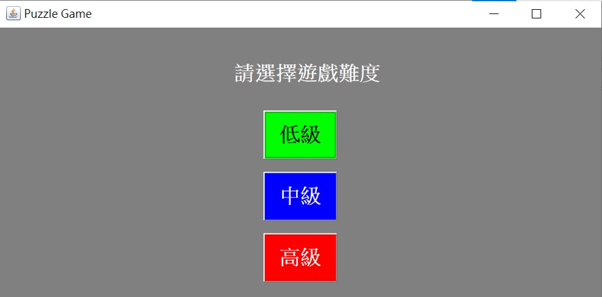
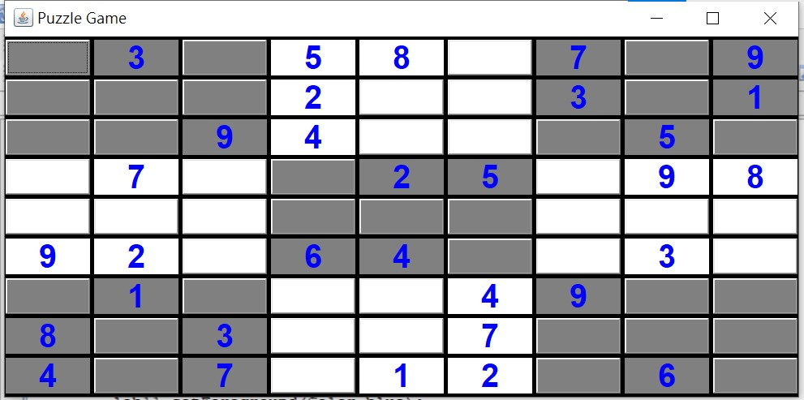
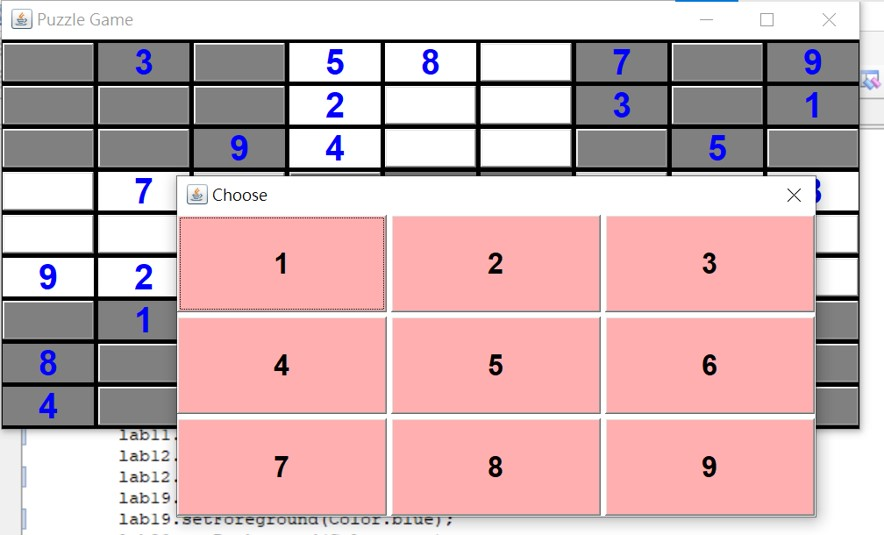
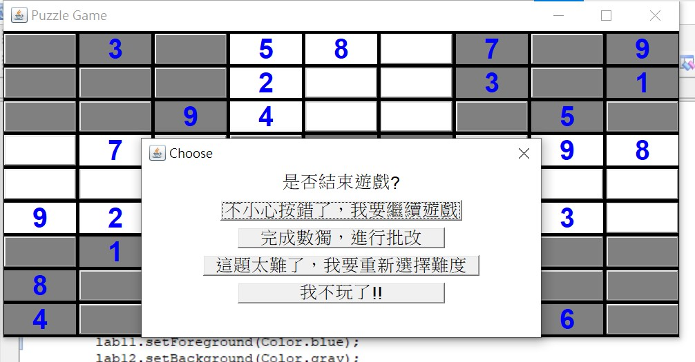

| 步驟 |
內容與備註 |
| Step.1 |
執
行程式，會跳出一個Puzzle Game的視窗。  |
| Step.2 | 選擇遊戲難
度，在按下按鈕後，會跳出一個對話方塊，提供遊戲的功能選擇。 |
| Step.3 | 按下
START按鈕，將原Puzzle Game的視窗最大化，即可得到數獨題目。  |
| Step.4 |
進行數獨的填寫，空白處均為按鈕，若要在其中填入數字，則按下該按鈕，會跳出對話視窗提供數字選擇。  |
| Step.5 | 若完成答案的填寫，則按下Puzzle Game的關閉視窗按鈕，會跳出選擇項目。  |